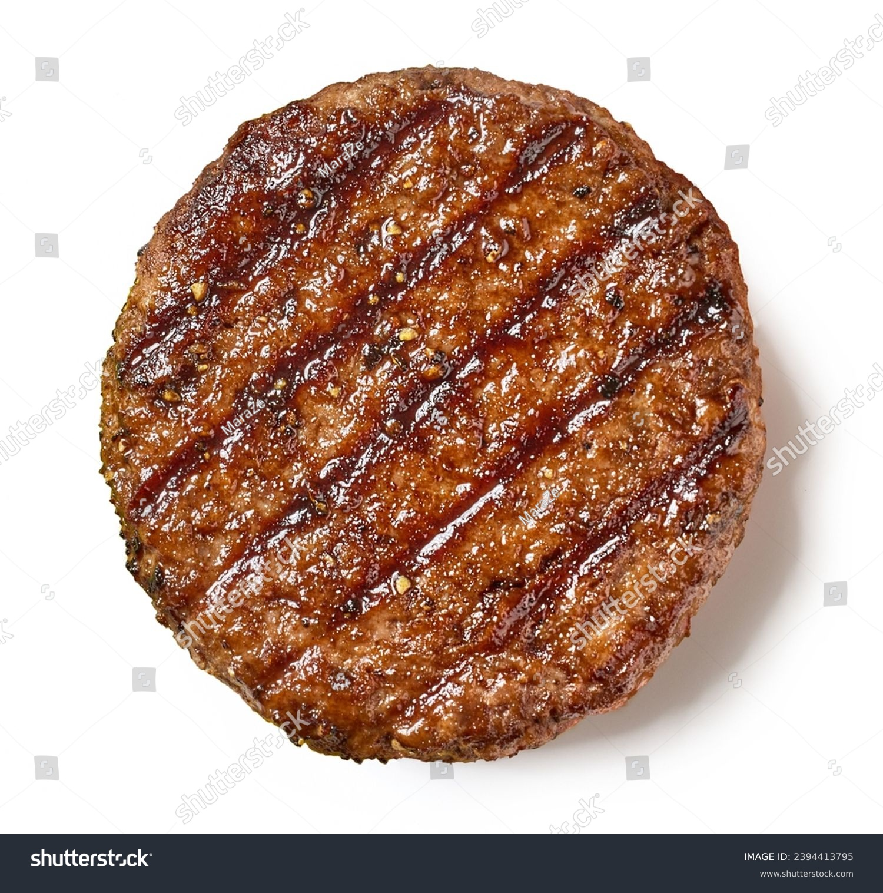

HAMBURGER PATTY

A hamburger patty is a ground meat patty that is typically made from beef. It is seasoned with various spices and herbs, shaped into a round, flat form, and then cooked by grilling, frying, or broiling. Hamburger patties are commonly served in a bun with various toppings such as lettuce, tomato, cheese, and condiments like ketchup, mustard, and mayonnaise.
Ingredients
- Ground beef
- Spices and seasoning
- Oil
Steps
- Season the beef: Mix the ground beef with the spices and seasoning in a bowl.
- Shape the patties: Divide the beef mixture into equal portions and shape them into round, flat patties.
- Cook the patties: Heat oil in a skillet or grill pan over medium-high heat. Cook the patties for a few minutes on each side until they are browned and cooked through.
- Serve the patties: Serve the hamburger patties on buns with your favorite toppings and condiments.